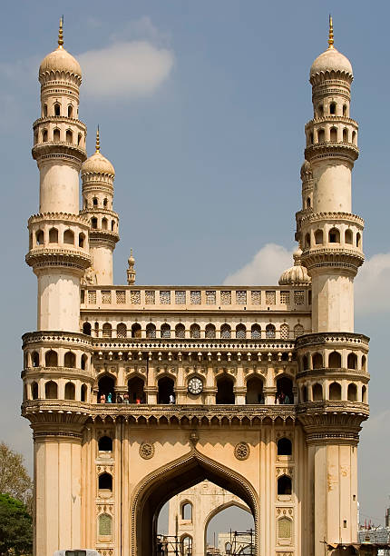
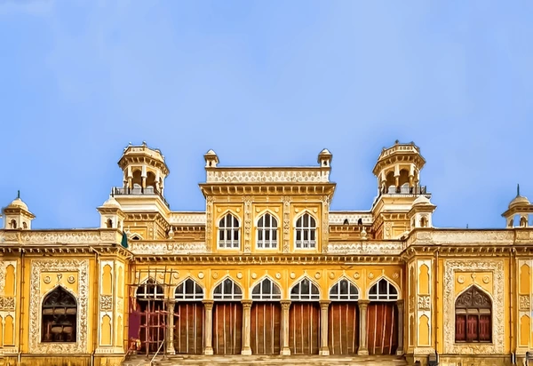
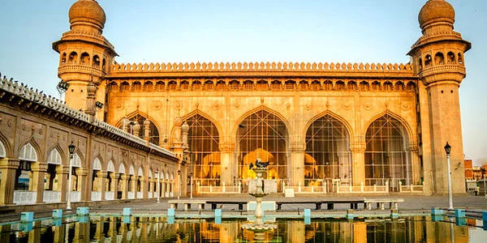

<html>
    <head>
        <title>HYDRABAD CITY </title>
    </head>
    <body>
          <style>
              <h1 style="background color:aqua">HYDERABAD CITY</H1>
         <h1><p style="text-align: center; "> HYDERABAD CITY</p></h1>
    
        <h1><u><i><ul><li>Charminar</li></ul></i></u></h1>
        </img>
        <h3>famous hyderabad charminar.The Charminar, meaning "Four Towers," is an iconic 16th-century monument and mosque in Hyderabad, 
            India, built by Muhammad Quli Qutb Shah in 1591, symbolizing the city's culture with its Indo-Islamic architecture,
             intricate carvings, four grand minarets, and bustling market surroundings, commemorating the end of a deadly plague.</h3>

             
        <h1><u><i><ul><li>Golconda fort</li></ul></i></u></h1>
        </img>
        <h3>Golconda Fort, a historic fortress in Hyderabad, India,
             was originally a mud fort from the 13th century,
              later fortified by the Qutub Shahi dynasty into a massive granite structure with impressive ramparts, gates, palaces, 
             and mosques, serving as a vital diamond trading hub and capital,
             known for its architectural blend and unique acoustic features. </h3>
        
        <h1><u><i><ul><li>Romaji film city</li></ul></i></u></h1>
        </img>
        <h3>Ramoji Film City (RFC) near Hyderabad, India, is the world's largest film studio complex,
             a Guinness World Record holder, offering integrated filmmaking facilities and a huge thematic tourism destination with film sets,
             adventure parks, gardens, live shows, and dining. Spanning over 2,000 acres,
             it features diverse locations like European streets, palaces, and gardens,
             catering to film shoots and families</h3>

        <h1><u><i><ul><li>Luxury hotel</li></ul></i></u></h1>
        </img>
        <h3>Luxury hotels offer personalized, high-end experiences with bespoke services (butlers, pillow menus), unique designs, top-tier amenities (spas, gourmet dining, tech), 
          prime locations, and exclusive access, focusing on anticipating needs and creating memorable,
             immersive stays beyond standard hotel offerings, often holding 4-5 star ratings or equivalent</h3>

         <h1><u><i><ul><li>Chowmahalla palace</li></ul></i></u></h1>    
        </img> 
        <h3>located near the Charminar in the Old City of Hyderabad, was the official seat of power and residence of the Nizams of Hyderabad. 
          The palace's name is derived from the Urdu word Chow (four) and the Arabic word Mahalat (plural of palaces), literally meaning "Four Palaces". </h3>

         <h1><u><i><ul><li>Hussain Sagar Lake</li></ul></i></u></h1> 
        
        
         </img>
         
         <h3>Hussain Sagar Lake is a large, heart-shaped, man-made lake in Hyderabad, 
          India, built in 1562 by Ibrahim Quli Qutb Shah, connecting Hyderabad and Secunderabad and serving as a major water source with parks like Lumbini Park bordering i</h3>

         <h1><u><i><ul><li>Mecca Masjid</li></ul></i></u></h1> 
        </img> 
        <h3>Mecca Masjid in Hyderabad is one of India's oldest and largest mosques, a significant Indo-Islamic architectural masterpiece named after Mecca, using bricks from there, 
          near the historic Charminar, known for its massive prayer hall (10,000 capacity), grand courtyard, and tombs of Nizams, 
          reflecting centuries of religious and socio-political importance. Its construction began in 1614 by Muhammad Quli Qutb Shah but finished in 1694 under Aurangzeb,
           making it a vital spiritual and cultural landmark in Hyderabad's Old City. </h3>

         <h1><u><i><ul><li>Zoological park</li></ul></i></u></h1>  
        </img>  
        <h3>Nehru Zoological Park in Hyderabad is a large, 380-acre zoo and conservation center, home to hundreds of species like tigers,
           lions, rhinos, and exotic birds, featuring attractions like a Lion Safari,
           aquarium, nocturnal house, and toy train,
           offering family-friendly activities and focusing on endangered species conservation with facilities for battery-operated vehicles and accessibility. </h3>

         <h1><u><i><ul><li>Salar Jung Museum</li></ul></i></u></h1>  
        </img>
        <h2>The Salar Jung Museum in Hyderabad, India, is a vast treasure trove of art and artifacts from across the globe, 
          primarily collected by Mir Yousuf Ali Khan (Salar Jung III), showcasing European, Asian, Middle Eastern, and Far Eastern art,
           with famous items like the musical clock and Veiled Rebecca, open most days (closed Fridays) from 10 AM to 6 PM, offering a deep dive into diverse cultures for art lovers. </h2>

         <h1><u><i><ul><li>Qutb shahi tombs</li></ul></i></u></h1>    
         </img>
        <h2> This historic necropolis features domes, arches, and intricate carvings, housing tombs of the seven kings and other notables, 
          and is recognized for its cultural significance and ongoing restoration efforts under the Aga Khan Trust for Culture. </h2>

          <style>
    .circle-img {
      width: 300px;
      height: 300px;
      border-radius: 50%;
    }
    </style>
    </body>

</html>

